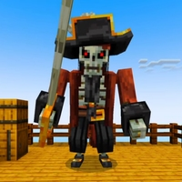

Босс-скелет-пират — это мощный враг из второго сезона "Магический Мир", являющийся одним из главных испытаний для Данила. Этот персонаж взят из модификации Pirate Boss Addon (1.21, 1.20) для MCPE/Bedrock, что добавляет уникальный элемент пиратских сражений в мир Данила. Скелет-пират управляет своим кораблем и обладает множеством способностей, делающих его серьёзным противником.
Встреча▼
Данил сталкивается с Боссом-скелетом-пиратом, когда садится на корабль в пятой серии. В этот момент атмосфера накаляется: скелеты-пираты начинают атаковать его, и вскоре на сцену выходит их предводитель. Битва начинается напряжённо, когда Босс неожиданно падает за борт, давая ложное чувство победы. Однако он возвращается и атакует Данила со спины, показывая свою хитрость и мастерство в бою.
Способности▼
Босс-скелет-пират использует своё пиратское оружие, и его атаки наносят значительный урон. Он также может призывать своих подчинённых скелетов, которые усложняют сражение для Данила. Однако благодаря умелому использованию своих навыков и перчатки с синим огоньком, Данил побеждает Босса-скелета. После победы Данил получает пиратскую шляпу как трофей, что символизирует его триумф в этой битве.
Итог ▼
Босс-скелет-пират — это уникальный и захватывающий враг, добавляющий элемент пиратских приключений в историю Данила. Его хитрые атаки и поддержка со стороны скелетов делают сражение с ним незабываемым моментом второго сезона, где Данил проявляет свои лучшие боевые качества.